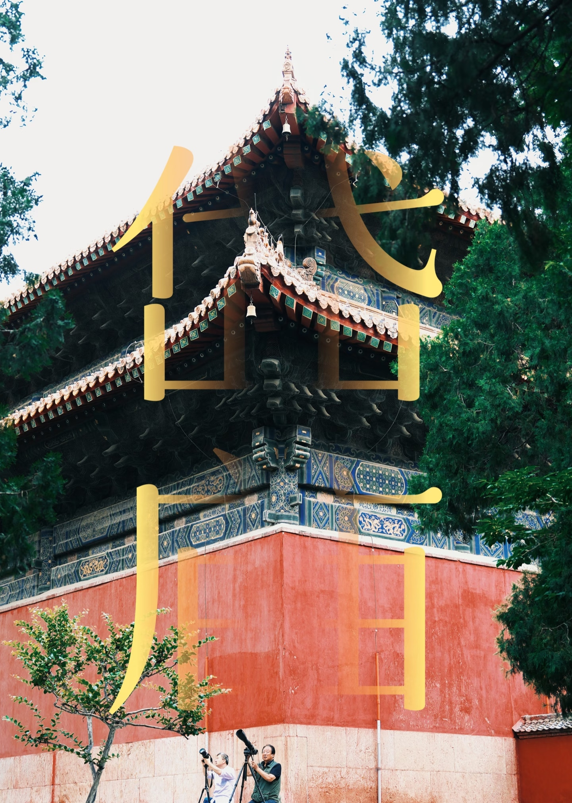
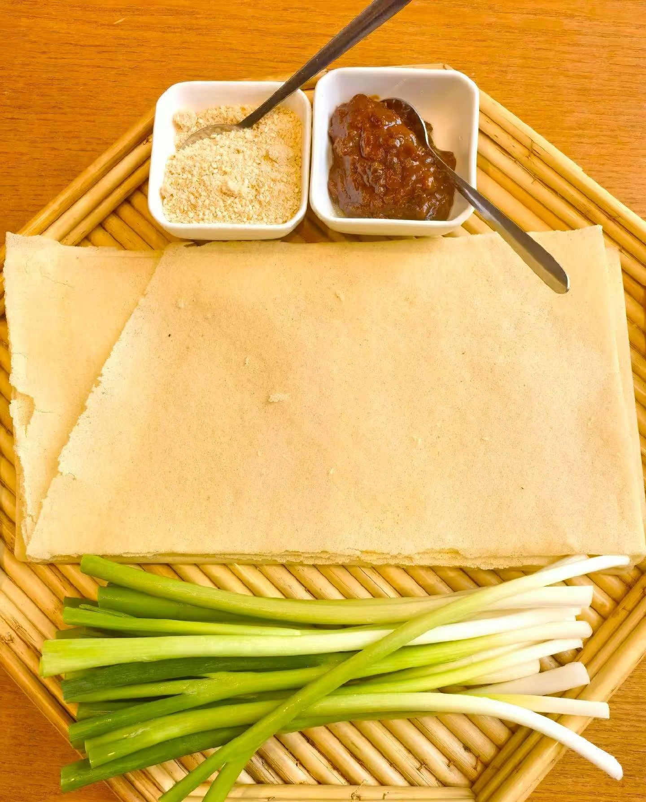
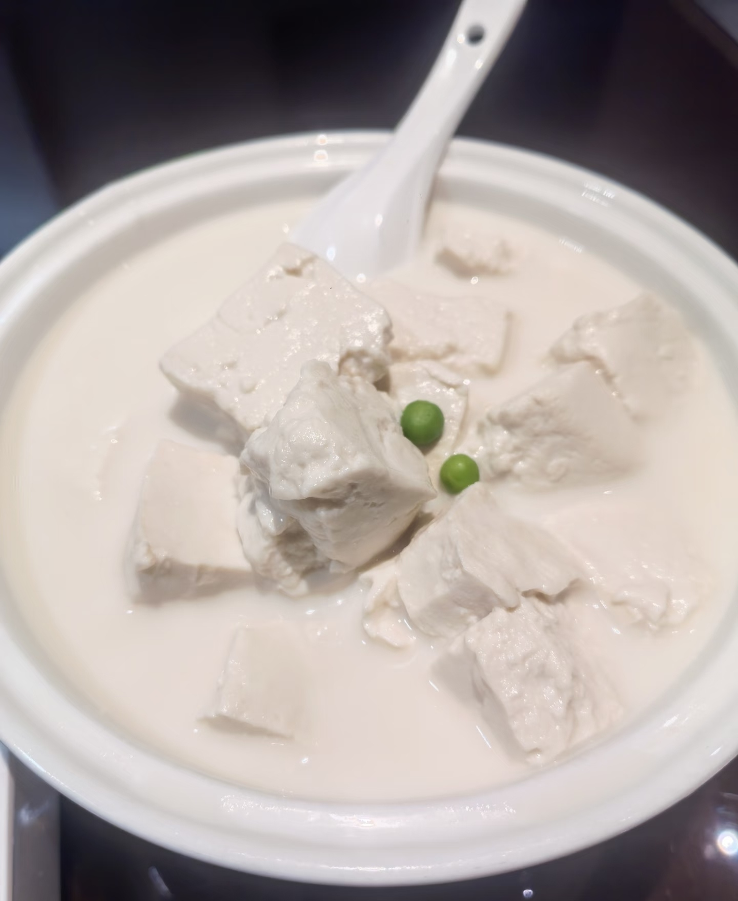
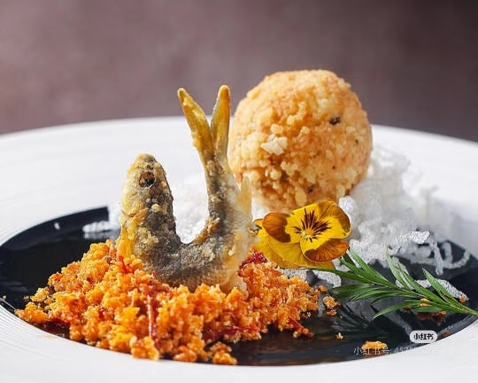
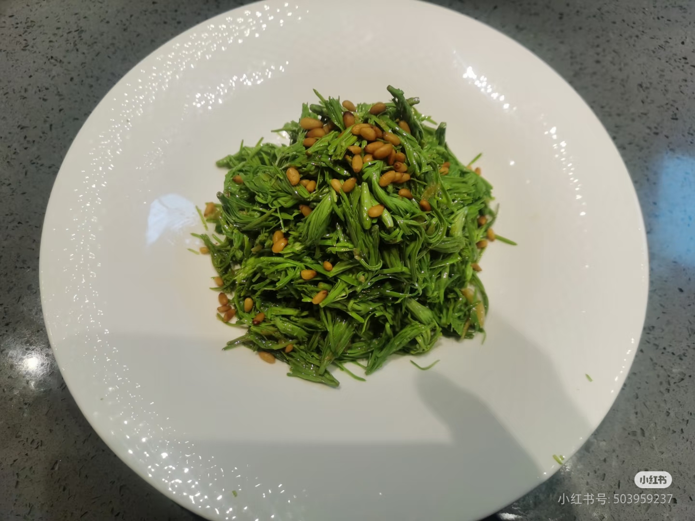

1.泰安是一座被泰山稳稳托举着的古城，推开城市的窗，便望见十八盘如天梯垂落，云海在山腰间翻涌。不同于平原城市的坦荡，这里开门见山，生活便自然有了向上的仰望，岱庙的香火与帝王封禅的尘埃，早已沉淀为这座城最厚重的底色。
2.而在擎天捧日的壮观之外，泰安更动人的是山脚下那热气腾腾的市井。老县衙的石板路上，挑山工的身影笃实而从容；一碗糁汤、一块驴油火烧，便撑起了泰安人踏实安逸的清晨。这座城，一半是云端之上的凌云意气，一半是柴米油盐的人间清欢。
泰山是"五岳独尊"的华夏之魂，拔地通天的巨石如巨龙镇守东方，云海玉盘之上，登临极顶便见金轮跃海、万山俯首，瞬间读懂"重于泰山"的磅礴与永恒。

泰山最大、最完整的古建筑群，始建于汉代，是历代帝王祭祀泰山的场所。岱庙保存了大量的古代碑刻和建筑艺术珍品。
泰山徒步登山的起点，因西北崖上有红门而得名，是泰山文化的重要标志。红门宫是泰山道教活动的重要场所。



